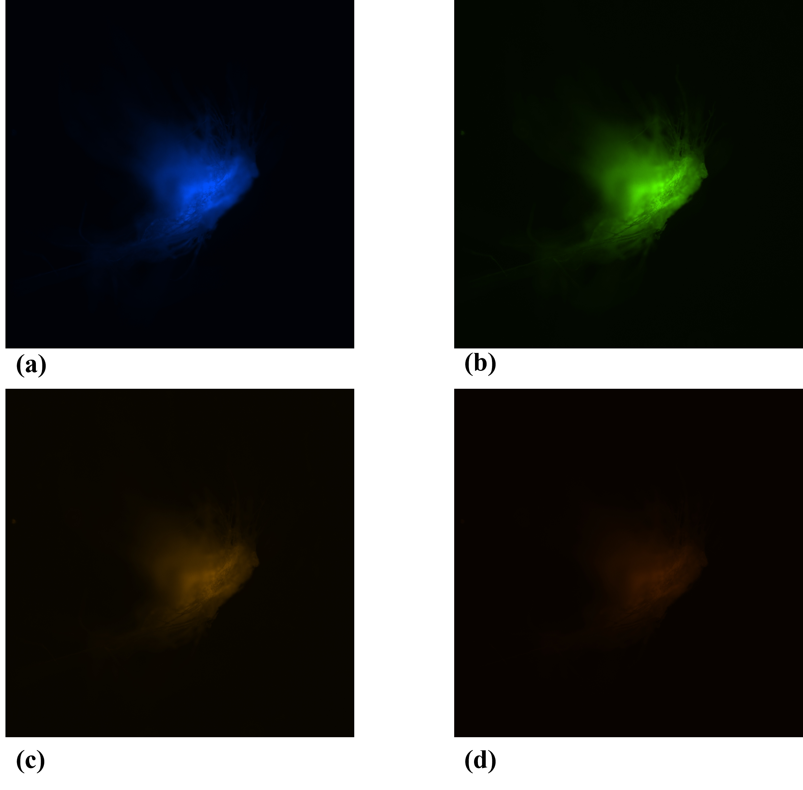

Autofluorescence: A Scientific Surprise
It's truly fascinating how the beauty of regular experimentation reveals itself. When you consistently conduct your experiments, you might encounter what seems like irrelevant noise or irregularities. By carefully examining these anomalies, you can uncover entirely new phenomena, aspects that were never the focus of your original study. This serendipitous discovery of insights from what initially appeared to be mere noise highlights the unpredictable and wondrous nature of scientific exploration.
One time, while I was working with fluorescence microscopy, I had a moment that was equal parts scientific revelation and cleaning disaster. There I was, examining my fluorescence samples on a glass slide, when I spotted some dust and tiny bits of tissue paper—definitely not what I wanted to see. Turns out, those were remnants of the tissue I usually use to clean the glass. But here's the twist: those pesky little debris were fluorescing in the blue region! I was completely shocked. Who knew my cleaning routine had a secret glow-in-the-dark feature? I mean, why on earth is the tissue paper fluorescing without any fluorophore tagged to it?
Yaa! you guessed it right it’s called autofluorescence! story end.
Autofluorescence means that under a certain wavelength of excitation light, electrons in a substance can enter an excited state and then transition back to the ground state to produce a certain wavelength of light.
|

Fig:-1 These are the images of normal tissue paper that we use for cleaning |

Fig:-2 These are the images of normal tissue paper of a bt bigger size than Fog:-1,that we use for cleaning |

Fig:-3 these are the image of the kimtech wipe tissue paper (lint free) |